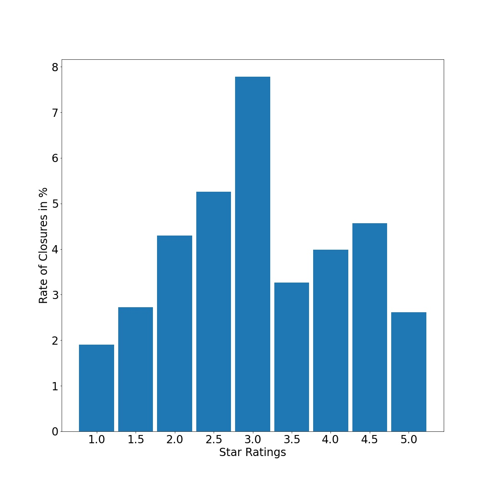

About
In this project, I am taking a closer look at how the Covid-19 pandemic has affected businesses in Cleveland. Some of the questions I am trying to find answers to are:
- Are there locations in Cleveland where closures happened more than the usual rate?
- What is common among these locations?
- What kinds of businesses were the most affected?
- Does popularity make businesses less vulnerable to closures?
- Are low-rated restaurants more likely to be shut-down?
Data Source
I required a data set containing information about businesses, especially whether they were open before the pandemic. The Yelp public dataset contains business details as of March 2020. In total it contains information of above 200,000 businesses in cities such as:
| City | # of Businesses |
|---|---|
| Las Vegas | 31631 |
| Toronto | 20366 |
| Phoenix | 20171 |
| Charlotte | 10422 |
| Scottsdale | 9342 |
| ... | ... |
| Cleveland | 3857 |
Let's take a peek at the data.
For me the most important columns are:
- business_id
- postal_code
- stars
- review_count
- is_open
- categories
In total, there were 3082 open businesses in Cleveland as of March 2020.
Next, I used the Yelp Fusion API to retrieve the latest information about each of these businesses. To get this information, I signed into my Yelp account and created an app with Yelp on the Manage App page. Then I got my API Key, which I used to call the Yelp API.
I found that out of 3082 open businesses back in March 2020, 131 shut-down (4.25%) , 2929 are still open and there is no information on 22 businesses.
Key Insights from Data
Let's see what we can understand about the closures.
Cleveland divided into Neighborhoods
Within Cleveland, there are 56 zip codes. 23 of these areas experienced closures. Let's focus on the top 10 locations with the most number of businesses. This is what the percentage of closures in these top-10 locations looks like:
Zip code 44115 recorded nearly twice more closures than the other areas. According to Zip Data website, this is a low median household income location. Supplementing the zip codes from Yelp data with information on the Zip Data website is currently on my to-do list.
Business Types
In Cleveland, there are about 500 different types of businesses. 85 of these businesses types (16.6%) experienced closures. Let's focus on the top 10 business types with the most number of shops. This is what the percentage of closures in the top-10 business types looks like:
I found that coffee shops, bars, new American restaurants experienced the most shutdowns. Interestingly, there are 48 hair salons in Cleveland but all of them remained resistant to shutdown.
Review Count
Let's see if popularity of the business made it resistant to closures. Here I assumed that the popularity is directly related to the review_count. In Cleveland, the most popular business is a restaurant named Townhall with 1439 reviews (still open). Amongst the closed businesses, the most popular was Lola - a New American Wine Bar - with 1110 reviews. This is how the closure rate depends on popularity:
We can see something counter-intuitive emerge from the above plot: the more popular businesses experienced more closures. Let's break down the types of businesses and zip codes in each of the 6 bins of popularity. Earlier we saw that Coffee shops/Bars/New American restaurants and businesses in Zip code 44115 had the most shut downs. Is review count correlated with these highly vulnerable business types? In other words, are Coffee Shops/Bars/New American restaurants the most popular businesses? Are the most popular businesses located in the worst affected area in Cleveland?
We now get more insights about the high rate of closures for popular businesses. The most popular businesses are also the ones which are more likely to shut down. Additionally, a decent number of the most popular businesses (category 6) are in zip code 44115.
Star Ratings
Let's see if low rated businesses closed more frequently than highly rated ones.
Notice the strange trend of increasing closures with increasing ratings from 1 star to 3 stars. I will leave this as an open question for now.